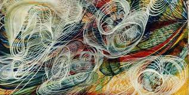
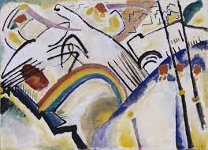
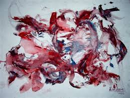

Article
Seni abstrak atau seni tanwujud adalah salah satu jenis kesenian kontemporer yang tidak menggambarkan objek dalam dunia asli, tetapi menggunakan warna dan bentuk dalam cara non-representasional. Pada awal abad ke-20, istilah ini lebih digunakan untuk mendeskripsikan seni seperi kubisme dan seni futuristik


